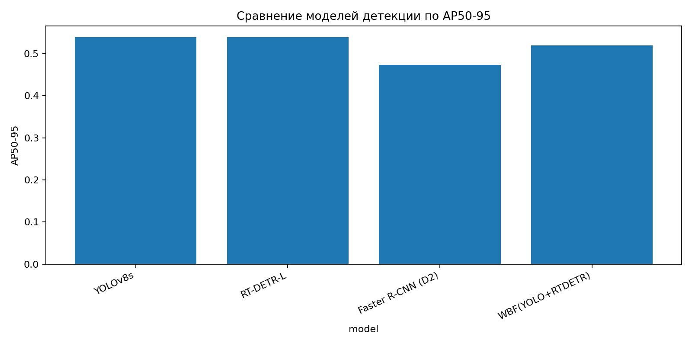
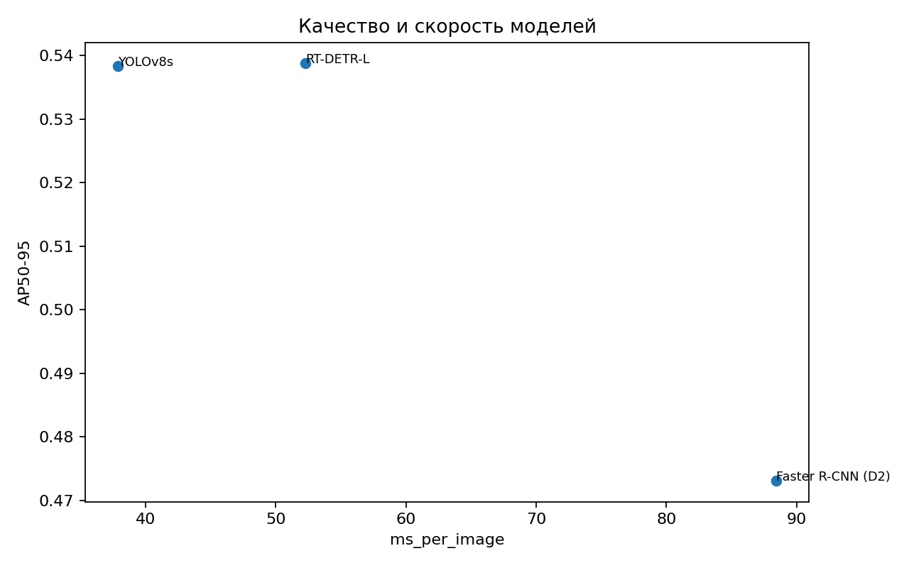
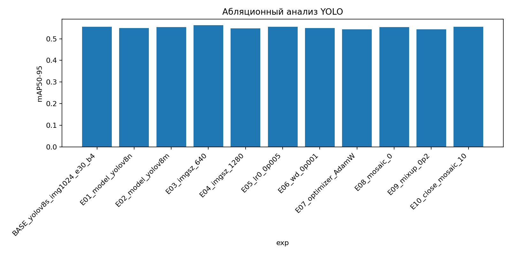
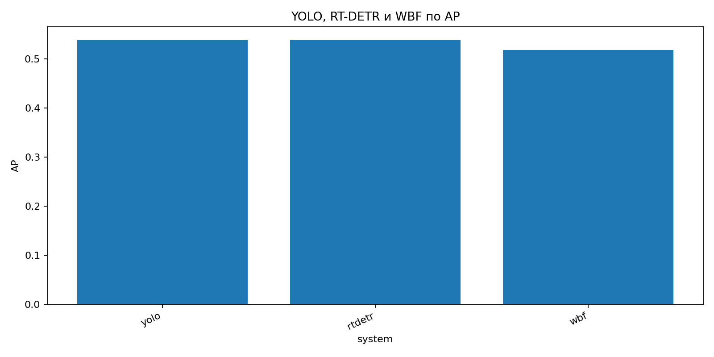
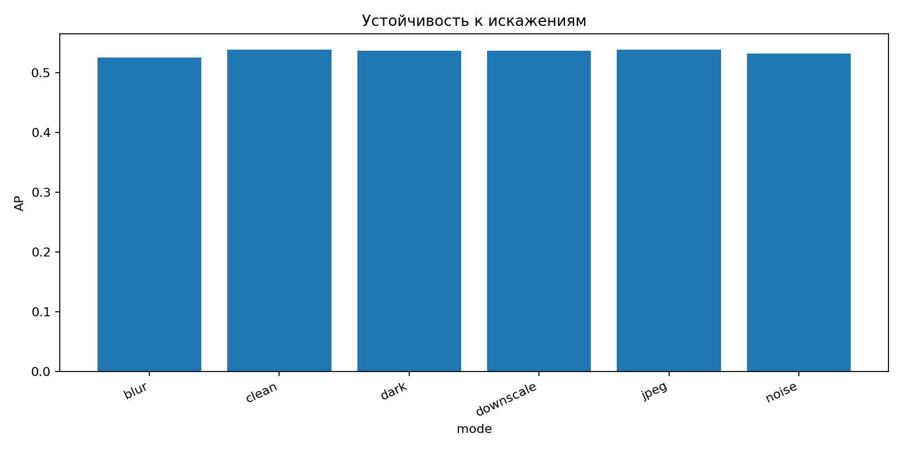
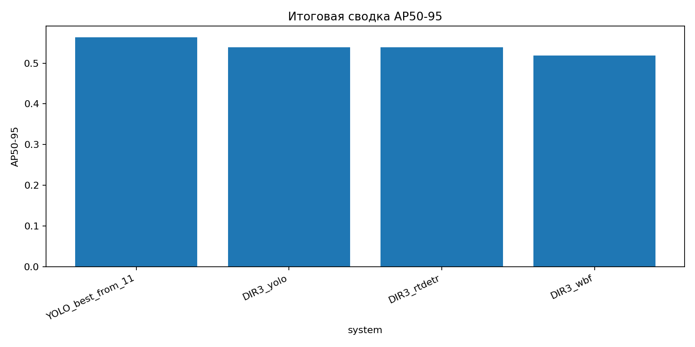

Визуальные примеры
Если заранее создана папка artifacts/final_showcase, здесь будут показаны примеры предсказаний моделей.


| Дата запуска | 29.04.2026 16:25:54 |
| Корень проекта | C:\Users\agd01\Documents\1ДипломМага\Проги\shelfvision |
| Python | 3.11.5 |
| ОС | Windows 10 |
| Процессор | AMD64 Family 25 Model 80 Stepping 0, AuthenticAMD |
| ОЗУ | 15.4 ГБ |
| GPU | CUDA не обнаружена через torch |
| Блок | Файл | Статус |
|---|---|---|
| DIR1_models | reports/all_stats/DIR1_models.csv | НАЙДЕНО |
| YOLO_11_ablations | reports/all_stats/YOLO_11_ablations.csv | НАЙДЕНО |
| DIR3_WBF | reports/all_stats/DIR3_WBF.csv | НАЙДЕНО |
| DIR5_robustness | reports/all_stats/DIR5_robustness.csv | НАЙДЕНО |
| D2S_YOLO_SEG_last | reports/all_stats/D2S_YOLO_SEG_last.csv | НАЙДЕНО |
| OVERALL_detection_min | reports/all_stats/OVERALL_detection_min.csv | НАЙДЕНО |






Если заранее создана папка artifacts/final_showcase, здесь будут показаны примеры предсказаний моделей.
4 строк, 8 столбцов
| model | AP50-95 | AP50 | AP75 | AP_small | AP_medium | AP_large | ms_per_image |
|---|---|---|---|---|---|---|---|
| YOLOv8s | 0.53835 | 0.88806 | 0.59693 | 0.09465 | 0.31529 | 0.59224 | 37.88405 |
| RT-DETR-L | 0.53879 | 0.89088 | 0.58845 | 0.06000 | 0.32058 | 0.59364 | 52.28224 |
| Faster R-CNN (D2) | 0.47307 | 0.85756 | 0.47615 | 0.02211 | 0.28145 | 0.51922 | 88.43933 |
| WBF(YOLO+RTDETR) | 0.51891 | 0.87535 | 0.55422 | 0.08914 | 0.29182 | 0.58284 |
11 строк, 13 столбцов
| P | R | epoch_last | exp | mAP50 | mAP50-95 | model | override | save_dir_full | seconds_total | status | minutes_total | is_best |
|---|---|---|---|---|---|---|---|---|---|---|---|---|
| 0.86111 | 0.81740 | 30.00000 | BASE_yolov8s_img1024_e30_b4 | 0.88157 | 0.55613 | yolov8s.pt | {} | C:\Users\agd01\Documents\1ДипломМага\Проги\shelfvision\runs_night_backup\BASE_yolov8s_img1024_e30_b4__full | 3727.40000 | ok | 62.12000 | 0.00000 |
| 0.86707 | 0.77808 | 30.00000 | E01_model_yolov8n | 0.86633 | 0.54935 | yolov8n.pt | {} | C:\Users\agd01\Documents\1ДипломМага\Проги\shelfvision\runs_night_backup\E01_model_yolov8n__full | 2894.30000 | ok | 48.24000 | 0.00000 |
| 0.85868 | 0.81123 | 30.00000 | E02_model_yolov8m | 0.87686 | 0.55417 | yolov8m.pt | {} | C:\Users\agd01\Documents\1ДипломМага\Проги\shelfvision\runs_night_backup\E02_model_yolov8m__full | 7176.40000 | ok | 119.61000 | 0.00000 |
| 0.86935 | 0.81526 | 30.00000 | E03_imgsz_640 | 0.88784 | 0.56312 | yolov8s.pt | {'imgsz': 640} | C:\Users\agd01\Documents\1ДипломМага\Проги\shelfvision\runs_night_backup\E03_imgsz_640__full | 2648.80000 | ok | 44.15000 | 1.00000 |
| 0.86798 | 0.79273 | 30.00000 | E04_imgsz_1280 | 0.87025 | 0.54837 | yolov8s.pt | {'imgsz': 1280} | C:\Users\agd01\Documents\1ДипломМага\Проги\shelfvision\runs_night_backup\E04_imgsz_1280__full | 5168.20000 | ok | 86.14000 | 0.00000 |
| 0.86111 | 0.81740 | 30.00000 | E05_lr0_0p005 | 0.88157 | 0.55613 | yolov8s.pt | {'lr0': 0.005} | C:\Users\agd01\Documents\1ДипломМага\Проги\shelfvision\runs_night_backup\E05_lr0_0p005__full | 3837.30000 | ok | 63.96000 | 0.00000 |
| 0.86285 | 0.80089 | 30.00000 | E06_wd_0p001 | 0.87196 | 0.54956 | yolov8s.pt | {'weight_decay': 0.001} | C:\Users\agd01\Documents\1ДипломМага\Проги\shelfvision\runs_night_backup\E06_wd_0p001__full | 3902.90000 | ok | 65.05000 | 0.00000 |
| 0.85134 | 0.77552 | 30.00000 | E07_optimizer_AdamW | 0.86052 | 0.54336 | yolov8s.pt | {'optimizer': 'AdamW'} | C:\Users\agd01\Documents\1ДипломМага\Проги\shelfvision\runs_night_backup\E07_optimizer_AdamW__full | 3827.60000 | ok | 63.79000 | 0.00000 |
3 строк, 7 столбцов
| system | AP | AP50 | AP75 | AR1 | AR10 | AR100 |
|---|---|---|---|---|---|---|
| yolo | 0.53844 | 0.88802 | 0.59642 | 0.03104 | 0.27694 | 0.63471 |
| rtdetr | 0.53889 | 0.89097 | 0.58889 | 0.03096 | 0.27718 | 0.63064 |
| wbf | 0.51865 | 0.87511 | 0.55381 | 0.03088 | 0.26733 | 0.63587 |
6 строк, 7 столбцов
| mode | param | AP | AP50 | AP75 | AR100 | file |
|---|---|---|---|---|---|---|
| blur | 2.00000 | 0.52576 | 0.87269 | 0.57288 | 0.62541 | /mnt/c/Users/agd01/Documents/1ДипломМага/Проги/shelfvision/artifacts/dir5_robustness/metrics_blur_2p0.json |
| clean | 0.00000 | 0.53815 | 0.88821 | 0.59494 | 0.63438 | /mnt/c/Users/agd01/Documents/1ДипломМага/Проги/shelfvision/artifacts/dir5_robustness/metrics_clean_0p0.json |
| dark | 0.60000 | 0.53631 | 0.88764 | 0.58959 | 0.63259 | /mnt/c/Users/agd01/Documents/1ДипломМага/Проги/shelfvision/artifacts/dir5_robustness/metrics_dark_0p6.json |
| downscale | 0.50000 | 0.53712 | 0.88784 | 0.59367 | 0.63390 | /mnt/c/Users/agd01/Documents/1ДипломМага/Проги/shelfvision/artifacts/dir5_robustness/metrics_downscale_0p5.json |
| jpeg | 50.00000 | 0.53834 | 0.88741 | 0.59491 | 0.63444 | /mnt/c/Users/agd01/Documents/1ДипломМага/Проги/shelfvision/artifacts/dir5_robustness/metrics_jpeg_50p0.json |
| noise | 10.00000 | 0.53179 | 0.87525 | 0.58787 | 0.62657 | /mnt/c/Users/agd01/Documents/1ДипломМага/Проги/shelfvision/artifacts/dir5_robustness/metrics_noise_10p0.json |
1 строк, 9 столбцов
| run_dir | status | epoch_last | P_box | R_box | mAP50_box | mAP5095_box | mAP50_mask | mAP5095_mask |
|---|---|---|---|---|---|---|---|---|
| /mnt/c/Users/agd01/Documents/1ДипломМага/Проги/shelfvision/runs/d2s_seg/d2s_small_yolov8s_seg_img6402 | ok | 30.00000 | 0.88011 | 0.58831 | 0.75064 | 0.71896 | 0.75064 | 0.71763 |
4 строк, 8 столбцов
| system | name | AP50-95 | AP50 | P | R | source | AR100 |
|---|---|---|---|---|---|---|---|
| YOLO_best_from_11 | E03_imgsz_640 | 0.56312 | 0.88784 | 0.86935 | 0.81526 | /mnt/d/1Diplom/runs_night_backup/summary.csv | |
| DIR3_yolo | NaN | 0.53844 | 0.88802 | /mnt/c/Users/agd01/Documents/1ДипломМага/Проги/shelfvision/artifacts/dir3_wbf/metrics.json | 0.63471 | ||
| DIR3_rtdetr | NaN | 0.53889 | 0.89097 | /mnt/c/Users/agd01/Documents/1ДипломМага/Проги/shelfvision/artifacts/dir3_wbf/metrics.json | 0.63064 | ||
| DIR3_wbf | NaN | 0.51865 | 0.87511 | /mnt/c/Users/agd01/Documents/1ДипломМага/Проги/shelfvision/artifacts/dir3_wbf/metrics.json | 0.63587 |